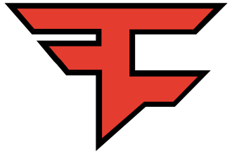
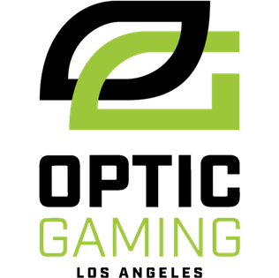
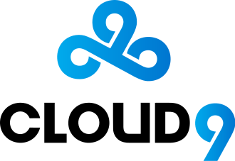
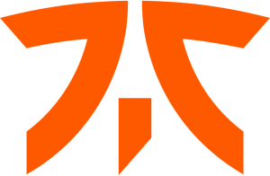
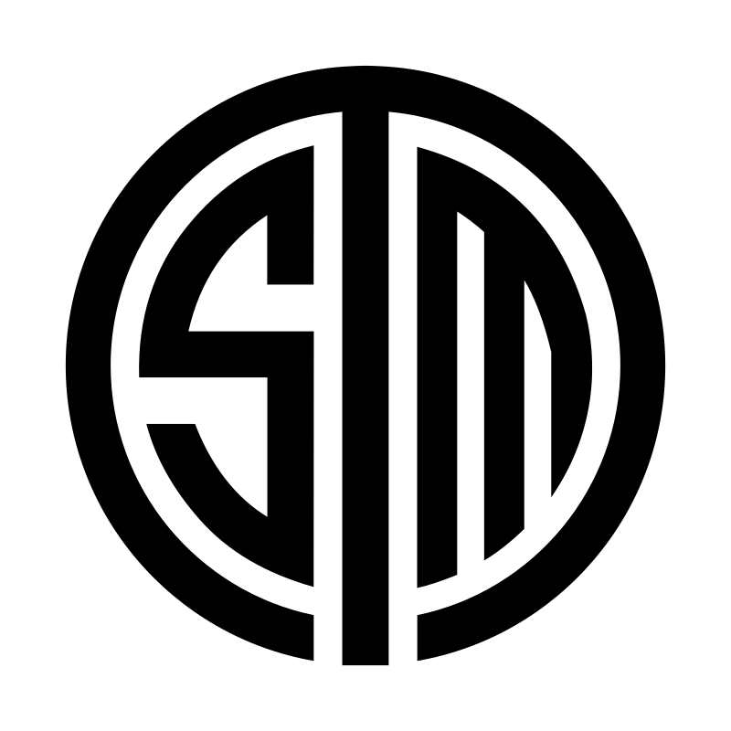
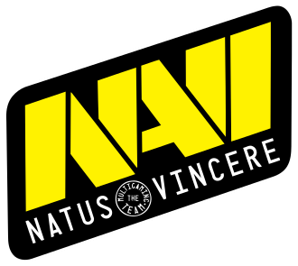
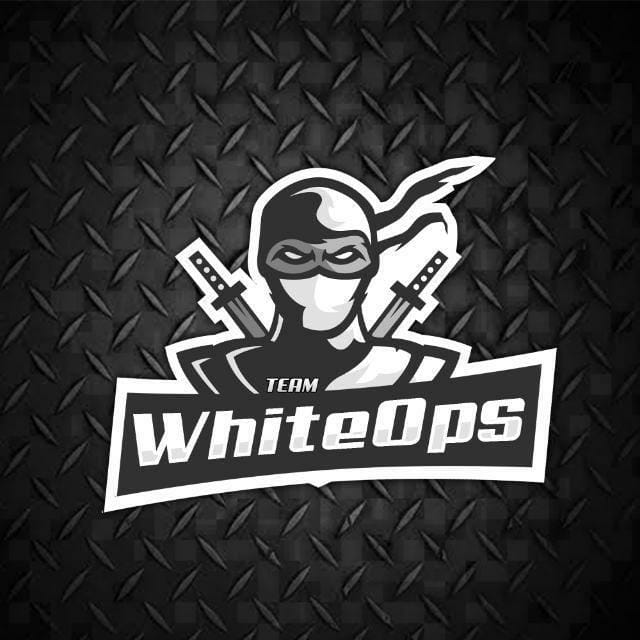
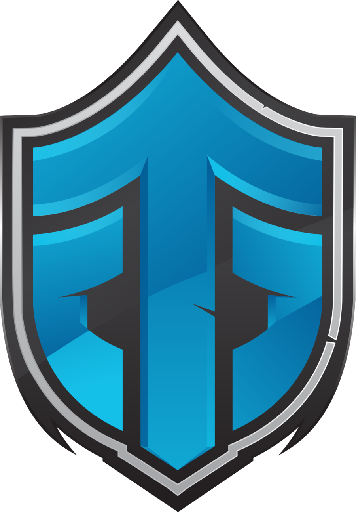
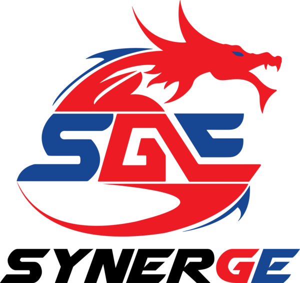
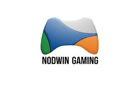

Professional gamers, or "pro gamers", are often associated with gaming teams and/or broader gaming associations. Teams like FaZe Clan, OpTic Gaming, Evil Geniuses, Team SoloMid, Cloud9, Fnatic, Mineski, Counter Logic Gaming, SK Telecom T1, Splyce, Team EnVyUs, and Natus Vincere consist of several professionals. These teams often cover multiple esports games within tournaments and leagues, with various team makeups for each game. They may also represent single players for one-on-one esports games like fighting games within Evolution Championship Series, or Hearthstone tournaments. In addition to prize money from tournament wins, players in these teams and associations may also be paid a separate team salary. Team sponsorship may cover tournament travel expenses or gaming hardware. Prominent esports sponsors include companies such as Logitech and Razer. Teams feature these sponsors on their website, team jerseys and on their social media, in 2016 the biggest teams have social media followings of over a million.[116] Associations include the Korean e-Sports Association (KeSPA), the International e-Sports Federation (IeSF), the British esports Association, and the World esports Association (WESA).

FaZe Clan (formerly FaZe Sniping) is a professional esports and entertainment organization headquartered in Los Angeles, United States. Founded on May 30, 2010, the organization has players from around the world, across multiple games, including Call of Duty, Counter-Strike: Global Offensive, PlayerUnknown's Battlegrounds, Tom Clancy's Rainbow Six Siege, FIFA, and Fortnite Battle Royale. In 2020, the organization expanded into the Asian market, acquiring a PUBG Mobile and FIFA Online roster.

OpTic Gaming Los Angeles, better known as simply OpTic Gaming, is an American professional Call of Duty League (CDL) esports team based in Los Angeles, California. Previously an esports organization with teams in multiple esports titles, OpTic Gaming formerly competed in Counter-Strike: Global Offensive, and League of Legends. The team is currently owned by Immortals Gaming Club.

Cloud9 (C9) is an American professional esports organization based in Los Angeles, California. It was formed in 2013, when CEO Jack Etienne bought the former Quantic Gaming League of Legends roster. Following the success of Cloud9's League of Legends team in the North American League of Legends Championship Series, the team began expanding into other esports. In 2015, Cloud9's Heroes of the Storm team won the first Heroes of the Storm World Championship, becoming the inaugural winner of the championship.

Fnatic (pronounced "fanatic"; also stylized as fnatic or FNATIC) is a professional esports organization headquartered in London, United Kingdom. Founded 23 July 2004, the team has players from around the world, across a variety of games, such as Apex Legends, Counter-Strike: Global Offensive, Dota 2, Heroes of the Storm, League of Legends, PUBG Mobile, and Rainbow Six Siege.
Fnatic's League of Legends team won the first-ever League of Legends World Championship in 2011, and also holds the record for the most League of Legends Championship Series split titles in the LEC, totalling seven of the thirteen played so far. In the 2015 EU LCS Summer Split they became the first LCS team to finish a split undefeated.
Fnatic's Counter-Strike team, which has traditionally been located in Sweden, is also considered one of the best in the video game series' history, having won three Global Offensive Majors and several other tournaments.

Team SoloMid (TSM) is a professional esports organization based in the United States. It was founded in September 2009 by Andy "Reginald" Dinh. TSM currently fields players in League of Legends, Apex Legends, Hearthstone, Super Smash Bros., Fortnite, PUBG Mobile, Tom Clancy's Rainbow Six Siege, and Magic: The Gathering Arena. The organization previously had a Counter-Strike: Global Offensive team based in Denmark that later became Astralis and also briefly owned an Overwatch team.
TSM's League of Legends team has won six of the total ten splits of North America's League of Legends Championship Series (LCS).

Natus Vincere (Latin for "born to conquer"), abbreviated Na'Vi, is an esports organization based in Ukraine. Founded in 2009, the organization has teams and players competing in various games, such as Counter Strike: Global Offensive, Dota 2, FIFA, World of Tanks, Paladins, League of Legends, PlayerUnknown's Battlegrounds, Apex Legends and Rainbow Six Siege.
Na'Vi Counter-Strike team was the first in history to win three premier tournaments—Intel Extreme Masters, Electronic Sports World Cup, and World Cyber Games 2010—in one calendar year. Their Dota 2 squad won The International 2011, becoming the most successful esports organization at the time.
Gaming Organization in India

Whiteops is a Asian community gaming Esports company.In 2020 this esports company won south east asia Apex Legends scrims. This Esports company was established in 2018 started formerly for PUBG Mobile esports but gradually expanded to pc games .
This company also did great in PUBG mobile.And now this company is thinkig to expand to other pc games.Currently Whiteops is trying to build the first ever eSports Compatible roster of Valorant the newly released First person shooter By Riot

Entity Gaming (formerly known as Entity eSports) is an Asian esports organization based in India.Entity Gaming was founded by Neerav Rukhana and Varun Bhavnani. Neerav Rukhana was a professional DOTA 2 who made it into The International 6 with team Beyond Infinity.

Indian esport organization, Global Esports has finally entered the mobile gaming space, partnering with Synergy Gaming, to acquire not one but four rosters. The rosters who were under the tag Synergy Gaming will now be known as SynerGE, SynerGE Retribution and SynerGE Apprentice. All 3 rosters are for PUBG Mobile.

NODWIN Gaming is a gaming solutions company and creator of e-sports events. NODWIN Gaming is a esports company, leading the industry across various games with numerous online and offline competitions. It operates high profile, branded international and esports competitions.
Recently international Esports companies like Fnatic and TSM invested in India. These Organizations chose their PUBG Mobile roasters from India providing Indian gaming Community huge oppurtunities for expanding gaming in India.
Their visit to India encourages other Esports companies to invest in India